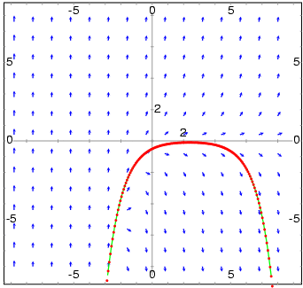
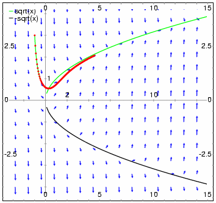
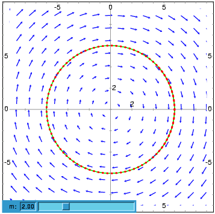
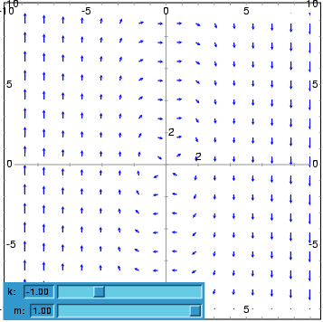
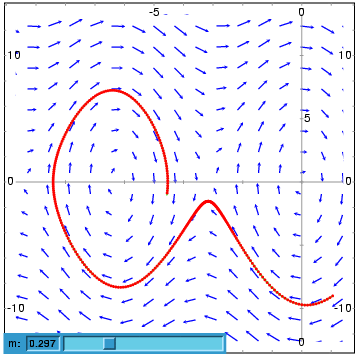
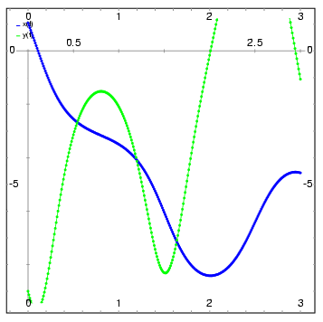

La función plotdf crea un gráfico del campo de direcciones para una Ecuación Diferencial Ordinaria (EDO) de primer orden, o para un sistema de dos EDO's autónomas, de primer orden.
Como se trata de un paquete adicional, para poder usarlo debe cargarlo primero con el comando load("plotdf"). También es necesario que Xmaxima esté instalado, a pesar de que ejecute Maxima desde otra interface diferente.
Para dibujar el campo de direcciones de una única EDO, esa ecuación deberá escribirse en la forma siguiente:
dy
-- = F(x,y)
dx
y la función F será dada como argumento para el comando plotdf. La variable independiente tiene que ser siempre x y la variable dependiente y. A esas dos variables no podrá estar asociado ningún valor numérico.
Para dibujar el campo de direcciones de un sistema autónomo de dos EDO's, Las dos ecuaciones deben ser escritas en la forma siguiente
dx dy
-- = G(x,y) -- = F(x,y)
dt dt
y el argumento para el comando plotdf será una lista con dos expresiones para las funciones F y G.
Cuando se trabaja con una única ecuación, plotdf asume implícitamente que x=t y G(x,y)=1, transformando la ecuación en un sistema autónomo con dos ecuaciones.
dydx, dxdt y dydt son expresiones que dependen de x y y. Además de esas dos variables, las dos expresiones pueden depender de un conjunto de parámetros, con valores numéricos que son dados por medio de la opción parameters (la sintaxis de esa opción se explica mas al frente), o con un rango de posibles valores definidos con la opción sliders.
Varias otras opciones se pueden incluir dentro del comando, o seleccionadas en el menú. Haciendo click en un punto del gráfico se puede hacer que sea dibujada la curva integral que pasa por ese punto; lo mismo puede ser hecho dando las coordenadas del punto con la opción trajectory_at dentro del comando plotdf. La dirección de integración se puede controlar con la opción direction, que acepta valores de forward, backward ou both. El número de pasos realizado en la integración numérica se controla con la opción nsteps y el incremento del tiempo en cada paso con la opción tstep. Se usa el método de Adams Moulton para hacer la integración numérica; también es posible cambiar para el método de Runge-Kutta de cuarto orden con ajuste de pasos.
Menú de la ventana del gráfico:
El menú de la ventana gráfica dispone de las siguientes opciones: Zoom, que permite cambiar el comportamiento del ratón, de manera que hará posible el hacer zoom en la región del gráfico haciendo clic con el botón izquierdo. Cada clic agranda la imagen manteniendo como centro de la misma el punto sobre el cual se ha hecho clic. Manteniendo pulsada la tecla Shift mientras se hace clic, retrocede al tamaño anterior. Para reanudar el cálculo de las trayectorias cuando se hace clic, seleccine la opción Integrate del menú.
La opción Config del menú se puede utilizar para cambiar la(s) EDO(S) y algunos otros ajustes. Después de hacer los cambios, se debe utilizar la opción Replot para activar los nuevos ajustes. Si en el campo Trajectory at del menú de diálogo de Config se introducen un par de coordenadas y luego se pulsa la tecla retorno, se mostrará una nueva curva integral, además de las ya dibujadas. Si se selecciona la opción Replot, sólo se mostrará la última curva integral seleccionada.
Manteniendo pulsado el botón derecho del ratón mientras se mueve el cursor, se puede arrastrar el gráfico horizontal y verticalmente. Otros parámetros, como pueden ser el número de pasos, el valor inicial de t, las coordenadas del centro y el radio, pueden cambiarse en el submenú de la opción Config.
Con la opción Save, se puede obtener una copia del gráfico en una impresora Postscript o guardarlo en un fichero Postscript. Para optar entre la impresión o guardar en fichero, se debe seleccionar Print Options en la ventana de diálogo de Config. Una vez cubiertos los campos de la ventana de diálogo de Save, será necesario seleccionar la opción Save del primer menú para crear el fichero o imprimir el gráfico.
Opciones gráficas:
La función plotdf admite varias opciones, cada una de las cuales es una lista de dos o más elementos. El primer elemento es el nombre de la opción, y el resto está formado por el valor o valores asignados a dicha opción.
La función plotdf reconoce las siguientes opciones:
Ejemplos:
NOTA: Dependiendo de la interface que se use para Maxima, las funciones que usan openmath, incluida plotdf, pueden desencadenar un fallo si terminan en punto y coma, en vez del símbolo de dólar. Para evitar problemas, se usará el símbolo de dólar en todos ejemplos.
(%i1) load("plotdf")$
(%i2) plotdf(exp(-x)+y,[trajectory_at,2,-0.1]);

(%i3) plotdf(x-y^2,[xfun,"sqrt(x);-sqrt(x)"],
[trajectory_at,-1,3], [direction,forward],
[yradius,5],[xcenter,6]);
El gráfico también muestra la función y = sqrt(x).

(%i4) plotdf([y,-k*x/m],[parameters,"m=2,k=2"],
[sliders,"m=1:5"], [trajectory_at,6,0]);

(%i5) plotdf([y,-(k*x + c*y + b*x^3)/m],
[parameters,"k=-1,m=1.0,c=0,b=1"],
[sliders,"k=-2:2,m=-1:1"],[tstep,0.1]);

(%i6) plotdf([y,-g*sin(x)/l - b*y/m/l],
[parameters,"g=9.8,l=0.5,m=0.3,b=0.05"],
[trajectory_at,1.05,-9],[tstep,0.01],
[xradius,6],[yradius,14],
[xcenter,-4],[direction,forward],[nsteps,300],
[sliders,"m=0.1:1"], [versus_t,1]);


This document was generated by Robert Dodier on agosto, 25 2007 using texi2html 1.76.
Created with the Personal Edition of HelpNDoc: Free EPub producer